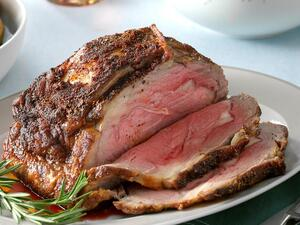

Easy Rib Eye Roast

Description
I make this rib-eye roast on the bone every time rib eyes are on sale. Easy and delicious; there are never any leftovers! We usually cook ours medium-rare.
Ingredients
- 1 cup softened butter
- 6 cloves garlic, minced
- 1 (4 pound) bone-in rib-eye roast
- sea salt and cracked black pepper to taste
Steps
- Preheat the oven to 500 degrees F (260 degrees C).
- Beat butter and garlic together in a bowl.
- Poke several holes in rib eye with a sharp knife. Rub butter mixture all over meat and season with salt and pepper. Place rib eye fat-side up in a roasting pan.
- Roast in the preheated oven for 20 minutes.
- Reduce heat to 325 degrees F (165 degrees C) and continue cooking until rib eye is reddish-pink and juicy in the center, 1 1/2 to 2 hours. An instant-read thermometer inserted into the center will read 145 degrees F (63 degrees C) for medium.